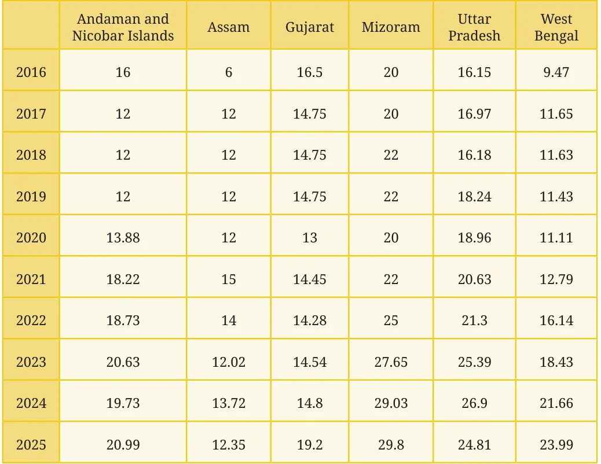
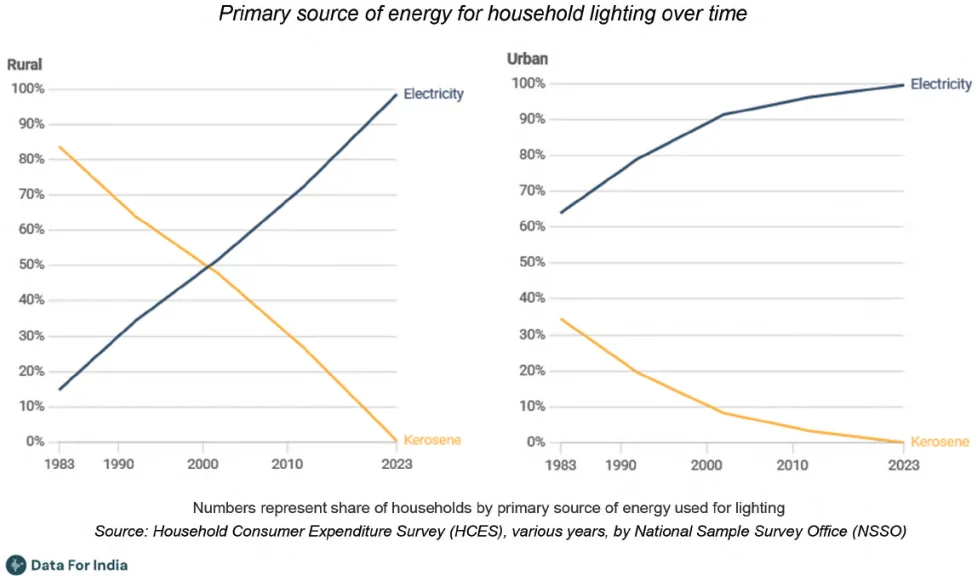
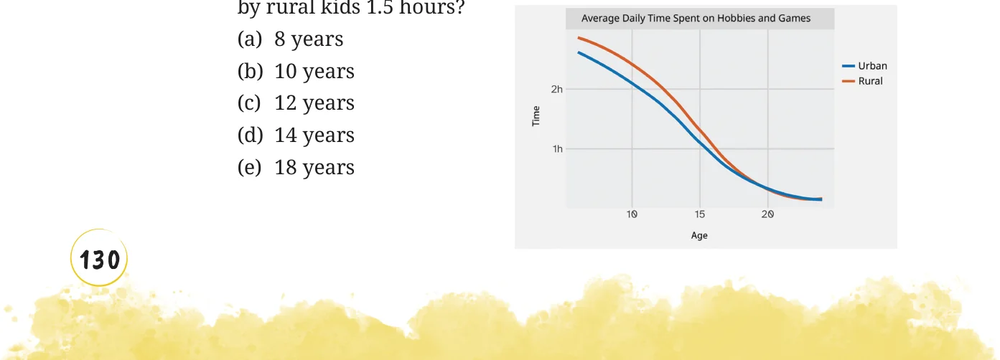
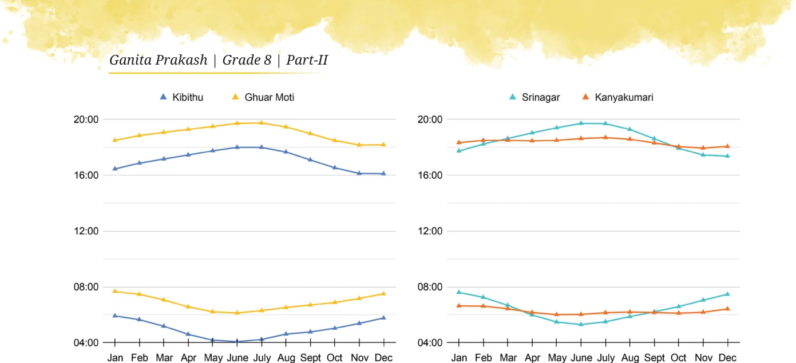

- 1.Mean Grids:
- (i)Fill the grid with 9 distinct numbers such that the
average along each row, column, and diagonal is 10.
- (ii)Can we fill the grid by changing a few numbers and
still get 10 as the average in all directions?
- 2.Give two examples of data that satisfy each of the following
conditions:
- (i)3 numbers whose mean is 8.
- (ii)4 numbers whose median is 15.5.
- (iii)5 numbers whose mean is 13.6.
- (iv)6 numbers whose mean = median.
- (v)6 numbers whose mean > median.
- 3.Fill in the blanks such that the median of the collection is 13: 5, 21,
14, _____, ______, ______. How many possibilities exist if only counting numbers are allowed?
- 4.Fill in the blanks such that the mean of the collection is 6.5: 3, 11, ____,
_____, 15, 6. How many possibilities exist if only counting numbers are allowed?
- 5.Check whether each of the statements below is true. Justify your
reasoning. Use algebra, if necessary, to justify.
- (i)The average of two even numbers is even.
- (ii)The average of any two multiples of 5 will be a multiple of 5.

- 6.There were 2 new admissions to Sudhakar’s class just a couple of
days after the class average height was found to be 150.2 cm.
- (i)Which of the following statements are correct? Why?
- (a)The average height of the class will increase as there are 2
new values.
- (b)The average height of the class will remain the same.
- (c)The heights of the new students have to be measured to find
out the new average height.
- (d)The heights of everyone in the class has to be measured
again to calculate the new average height.
- (ii)The heights of the two new joinees are 149 cm and 152 cm.
Which of the following statements about the class’ average height are correct? Why?
- (a)The average will remain the same.
- (b)The average will increase.
- (c)The average will decrease.
- (d)The information is not sufficient to make a claim about the
average.
- (iii)Which of the following statements about the new class average
height are correct? Why?
- (a)The median will remain the same.
- (b)The median will increase.
- (c)The median will decrease.
- (d)The information is not sufficient to make a claim about
median.
- 7.Is 17 the average of the data shown in the dot plot below? Share
the method you used to answer this question.
\(\times \times \times \times \times \times \times \times \times \times \times \times \times \times \times \times \times \times \times \times \times \times \times \times \times\)
14 15 16 17 18 19 20 21 22 23
- 8.The weights of people in a group were measured every month.
The average weight for the previous month was 65.3 kg and the median weight was 67 kg. The data for this month showed that

one person has lost 2 kg and two have gained 1 kg. What can we say about the change in mean weight and median weight this month?
- 9.The following table shows the retail price (in ₹) of iodised salt in the
month of January in a few states over 10 years. For your calculations and plotting you may round off values to the nearest counting number.

- (i)Choose data from any 3 states you find interesting and present
it through a line graph using an appropriate scale.
- (ii)What do you find interesting in this data? Share your
observations.
- (iii)Compare the price variation in Gujarat and Uttar Pradesh.
- (iv)In which state has the price increased the most from 2016 to
2025?
- (v)What are you curious to explore further?

- 10.Referring to the graph below, which of the following statements are
valid? Why?

- (i)In 1983, the majority in rural areas used kerosene as a
primary lighting source while the majority in urban areas used electricity.
- (ii)The use of kerosene as a primary lighting source has decreased
over time in both rural and urban areas.
- (iii)In the year 2000, 10% of the urban households used electricity
as a primary lighting source.
- (iv)In 2023, there were no power cuts.
- 11.Answer the following questions based on the line graph.
- (i)How long do children aged 10 in urban areas spend each day on
hobbies and games?
- (ii)At what age is the average time spent daily on hobbies and games

- (iii)Are the following statements correct?
- (a)The average time spent daily on hobbies and games by kids
aged 15 is twice that of kids aged 10.
- (b)All rural kids aged 15 spend
at least 1 hour on hobbies and games everyday.
- 12.Individual project: Make your own
activity strip for different days of the week.
- (i)Do you eat and sleep at regular
times every day? Typically how long do you spend outdoors?
- (ii)Calculate the average time spent per activity. Represent this
average day using a strip.
- (iii)Similarly, track the activities of any adult at home. Compare
your data with theirs.
- 13.Small group project: Make a group of \(3 - 4\) members. Do at least
one of the following:
- (i)Track daily sleep time of all your family members for a week.
Daily sleep time includes night sleep, naps, and any sleep during the day.
- (a)Represent this on strips.
- (b)Put together the data of all your group members. Calculate
the average and median sleep time of children, adults, elderly.
- (c)Share your findings and observations.
- (ii)When do schools start and end? On a weekday, Manoj’s school
starts at 9:30 am and ends at 4:30 pm, i.e., 7 hours which include class time and breaks. Collect information on the daily timings of different schools for Grade 8, including class time and break time (the schools can be anywhere in the country. You can ask your neighbours, relatives, parents and friends to find out). Analyse and present the data collected.
- 14.The following graphs show the sunrise and sunset times across the
year at 4 locations in India. Observe how the graphs are organised. Are you able to identify which lines indicate the sunrise and which indicate the sunset?

Answer the following questions based on the graphs:
- (i)At which place does the sun rise the earliest in January? What is
the approximate day length at this place in January?
- (ii)Which place has the longest day length over the year?
- (iii)Share your observations - what do you find interesting? What
are you curious to find out?
- 15.We all know the typical sunrise and sunset timings. Do you
know when the moon rises and sets? Does it follow a regular pattern like the sun? Let’s find out. The following graph shows the moonrise and moonset time over a month: ThisTry
- (i)Find out on what dates amavasya (new moon) and purnima
(full moon) were in this month.
- (ii)What do you notice? What do you wonder?